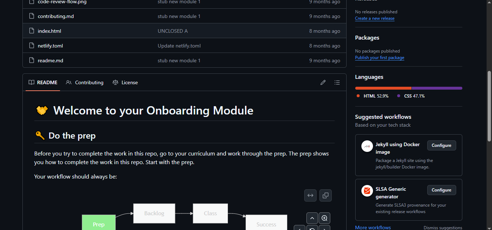

Wireframes
Product designers and UX (user experience) professionals draw up wireframes to communicate how they plan to arrange and prioritize features, and how they intend for users to interact with its product or website.
It can help ensure the entire cross-functional team is on the same page in terms of strategic goals before beginning development work.
Read more

README files
A README is a file in the root folder of a repository, which displays under the files and folders in the root repo.
This means a README is often the first item a visitor will see when visiting your repository in Github. README files typically include information on: what the project does; why the project is useful; how users can get started with the project; where users can get help with your project; and who maintains and contributes to the project.
Read more

Git Branches
Git Branches allow us to work on different versions of our code simultaneously.
They allow us to create separate contexts where we can try new things or even work on multiple ideas in parallel without risking the codebase.
If we make changes on one branch, they do not impact the other branches until we merge or integrate the changes.
Read more